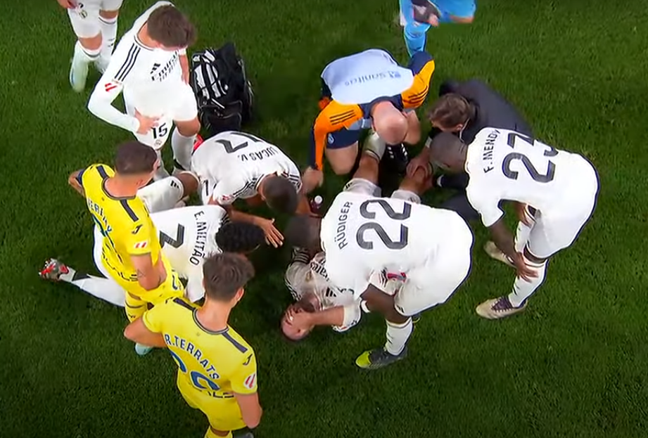
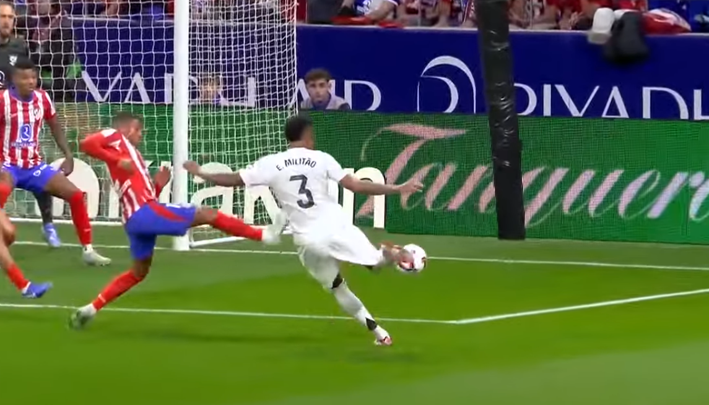

La amarga victoria del Real Madrid ante el Villarreal por la lesión de Dani Carvajal
5/10/2024

El Real Madrid consiguió una victoria importante por 2-0 frente al Villarreal, en la jornada 9 de La Liga. Sin embargo, el partido quedó marcado por un episodio que eclipsó el resultado: la grave lesión de Dani Carvajal, el lateral derecho del equipo. A pesar de los goles de Fede Valverde y Vinícius Jr., la imagen de Carvajal abandonando el campo entre lágrimas dejó una sensación amarga tanto en el equipo como en la afición.
La lesión de Carvajal ocurrió en el tiempo añadido del partido, específicamente en el minuto 94. El defensor intentaba despejar el balón cuando Yeremy Pino, delantero del Villarreal, se interpuso justo en ese momento, lo que provocó una hiperextensión de la rodilla derecha del jugador del Real Madrid. Carvajal cayó inmediatamente al suelo gritando de dolor, y su expresión de sufrimiento fue evidente para todos los presentes en el estadio.
A pesar de la rápida intervención del equipo médico, el lateral tuvo que ser retirado en camilla. Su salida del campo entre lágrimas y el gesto de dolor dejó claro que la lesión podría ser grave, lo que generó una enorme preocupación tanto en sus compañeros como en los aficionados. Se espera un comunicado oficial del club tras las pruebas médicas, aunque ya se especula que podría estar fuera por varios meses.
El Real Madrid, desde su dirigencia hasta sus hinchas, está alarmado por la posible gravedad de la lesión. Carvajal es un jugador clave en la defensa del equipo, y su baja prolongada representaría un gran desafío para el equipo, tanto en La Liga como en la Champions League. La incertidumbre sobre su tiempo de recuperación ha dejado un ambiente de preocupación, lo que contrasta con la alegría que habitualmente acompaña una victoria de este calibre.
A pesar de la victoria, este partido será recordado más por el dolor de Carvajal que por los goles de Valverde y Vinícius. La lesión del defensor ha eclipsado cualquier celebración, dejando un sabor amargo en el club. Lo que debía ser un triunfo importante se ha transformado en una fuente de preocupación, ya que la ausencia de Carvajal, de confirmarse, afectará seriamente al equipo.
El Real Madrid logró una victoria crucial, pero la lesión de Dani Carvajal ha oscurecido el resultado. A la espera de un diagnóstico oficial, el club, los jugadores y la afición están en vilo por la gravedad de la situación, sabiendo que podrían enfrentar una etapa sin uno de sus jugadores más importantes en el campo.
Empate agónico entre Real Madrid y Atlético en un derbi marcado por 20 minutos de interrupción y tensión final
29/09/2024

El partido entre el Real Madrid y el Atlético de Madrid terminó en un emocionante empate 1-1, pero estuvo marcado por varios momentos tensos. El encuentro fue interrumpido durante 20 minutos en el segundo tiempo después de que la afición del Atlético lanzara objetos al portero del Real Madrid, Thibaut Courtois, tras el gol inicial de Militao para el Madrid. Este incidente provocó que el árbitro mandara a los jugadores a los vestuarios mientras se calmaba la situación.
Cuando el partido se reanudó, el Atlético logró empatar en los minutos de descuento. Ángel Correa, que había ingresado en la segunda mitad, anotó el gol del empate tras un pase de Javi Galán. Este gol fue celebrado efusivamente, pero también estuvo acompañado de momentos tensos, ya que Marcos Llorente del Atlético fue expulsado por una entrada sobre Fran García.
El resultado final reflejó un partido lleno de tensión, en el que ambos equipos tuvieron oportunidades, pero el juego fue afectado tanto por el parón como por la intensidad de los últimos minutos.
Ajustes en los Límites Salariales Marcan la Nueva Temporada 2024/2025
12/09/2024
Para la temporada 2024/25, los límites salariales de los clubes en La Liga han sido actualizados. El Real Madrid es el equipo con el mayor límite salarial, pasando los 754 millones de euros, seguido por el FC Barcelona con 426 millones, y el Atlético de Madrid en tercer lugar con algo mas de 310 millones. Estos límites son establecidos por La Liga y están basados en los ingresos de los clubes, a los que se les restan los gastos no deportivos.
El Barcelona, que había enfrentado dificultades económicas, ha logrado aumentar significativamente su límite salarial desde los 204 millones en febrero, aunque aún se encuentra bajo restricciones debido a su situación financiera. Por su parte, el Real Madrid ha mantenido una posición estable y sigue ampliando su límite salarial, consolidándose como el equipo con mayor capacidad de gasto en la liga.
Real Madrid: 754.894.000 €
El club con mayor capacidad de gasto. Refuerza su posición como uno de los equipos más poderosos no solo de España, sino del mundo. Este límite les permite mantener una plantilla de élite, con fichajes galácticos y sueldos acordes a los mejores jugadores.
FC Barcelona: 426.427.000 €
Aunque sigue en segundo lugar, su diferencia con el Real Madrid es significativa y todavia delicada.
Atlético de Madrid: 310.745.000 €
Mantiene una posición sólida, aunque sigue lejos de los dos gigantes del fútbol español. Este presupuesto les permite seguir siendo competitivos en La Liga y en Europa, aunque sin la capacidad de hacer grandes fichajes con la misma frecuencia que el Madrid o el Barça.
Real Betis: 108.990.000 €
Real Sociedad: 159.259.000 €
Sevilla FC: 2.499.000 €
Athletic Club: 100.818.000 €
Villarreal CF: 135.860.000 €
Valencia CF: 74.608.000 €
Girona FC: 94.464.000 €
RCD Mallorca: 58.841.000 €
Osasuna: 51.862.000 €
Deportivo Alavés: 38.628.000 €
Rayo Vallecano: 45.571.000 €
Celta de Vigo: 77.570.000 €
Getafe CF: 39.172.000 €
UD Las Palmas: 40.320.000 €
RCD Espanyol: 8.789.000 €
CD Leganés: 37.138.000 €
Real Valladolid: 41.836.000 €
Los límites salariales reflejan claramente la desigualdad que existe en La Liga. El Real Madrid y el Barcelona dominan con diferencias abismales respecto a otros clubes, lo que les da una ventaja clara a la hora de competir tanto a nivel nacional como internacional. Equipos como el Atlético de Madrid, Real Sociedad y Villarreal también tienen un margen considerable, pero es preocupante ver a clubes históricos como el Sevilla y el Espanyol con límites salariales tan bajos. Esto no solo afectará su rendimiento en La Liga, sino que también podría repercutir en sus futuras participaciones en competiciones europeas o su capacidad para atraer talento.
El caso del Sevilla es especialmente alarmante. A pesar de su éxito reciente en competiciones europeas, su límite salarial actual es muy bajo, lo que podría comprometer su capacidad para mantenerse competitivo. La situación del Barcelona, aunque ha mejorado, sigue siendo inestable, ya que aún no han alcanzado la regla 1:1 del fair play financiero.
En resumen, los límites salariales en La Liga continúan mostrando una marcada diferencia entre los grandes equipos y los clubes medianos y pequeños. Esto refuerza la idea de que el éxito a largo plazo en el fútbol español está estrechamente ligado a la capacidad económica de cada club.